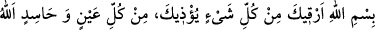

“Cebrâil (a.s.) geldi ve bana şöyle bir nazar duâsı okudu:
“Bismillâhi erkıyke min külli şey’in yü’zîke, min külli aynin ve hâsidin Allâhu
yeşfîke (Sana eziyet veren her şeyden Allah’ın adıyla seni rukye yapıyorum, bütün
nazarlardan ve hasedcilerden (onların kötülüklerinden) Allah sana şifâlar versin!”
Hz. Peygamber (a.s.) şöyle devam etti: “Bunun ardından hemen ayıldım.”[65]
Bu hadiste ve mezkûr Ümm-i Seleme hadisinde rukye yapmanın (tedavi maksadıyla
Kur’ân okumanın) câiz olduğuna delil vardır. Ulemânın geneli bu görüştedir. Ancak bu
cevâz, okunan şeylerin Kur’ân’dan veya bilinen zikirlerden olması halinde geçerlidir.
Mânâsı bilinmeyen şeylerin okunması ise mekruhtur.
Hz. Âişe (r.anhâ)’dan rivâyete göre Peygamber Efendimiz (s.a.) kendisine: “Muska
(rukye) öğrensen ya!” demiştir.[66]
Bâzıları der ki: Bunda, muska kullanmanın mekruh olmadığına delil vardır. Çünkü Hz.
Peygamber (a.s.) Hz. Âişe’nin bunu yapmasını kerih görmemiştir.
Bir grup âlim ise Ebû Dâvud’un Sünen’indeki şu merfu hadisi delil getirerek muskayı
mekruh görmüşlerdir: “Muska, şeytanın amellerindendir.”[67]
Ancak bu ‘muska’, anlaşılmaz birtakım isimleri ihtiva eden, duâ ve efsunlarla birlikte
yapılan muskalara hamledilmiştir. Nitekim Mutarrizî el-Muğrib’de böyle demektedir.
Rukye ancak Arapça olmadığı ve mahiyeti anlaşılmadığı zaman mekruh olur. Belki de
bu muskalarda küfür ve sihir ifadeleri vardır.
Kur’ân ve dualardan olan rukyede bir beis yoktur. Denenmiş bir duâ olan eûzüyü veya
denenmiş bazı âyetleri yahut da Allah’ın bazı isimlerini belâları defetmek maksadıyla
asmakda da bir beis yoktur. Fakat helâya girerken ve kadınlara yaklaşırken bunların
çıkarılması lazımdır. Nitekim Tatarhâniyye (fetvaların)’da böyle geçmektedir.
Bazılarına göre ise bir şeyle örtülü ise çıkarılmayabilir. Ancak evla olan çıkarmaktır.
Hz. Peygamber (s.a.), Hasan ve Hüseyin (r.anhümâ)’yı şu sözleriyle Allah’ın
korumasını niyaz ederdi: “İkinizi her şeytandan, haşerâttan ve dokunan her kötü
gözden Allah’ın tam olan kelimelerine sığındırırım.” ve eklerdi: “Siz de Allah’ın
çocuklarınızı bu kelimelerle korumasını niyaz edin. Çünkü İbrahim (a.s.) da Allah’ın
İsmail ve İshak’ı bunlarla korumasını niyaz ederdi.”[68]
“Allah’ın kelimeleri” Allah Teâlâ’nın peygamberlerine indirilen kitapları ya da izzet,
kudret ve diğer sıfatlarıdır. Onların tam ve eksiksiz oluşu ise noksanlık ve kopukluktan
uzak olmalarındandır.
Ahmed b. Hanbel, “Allah’ın tam olan kelimelerine” ifadesini Kur’ân’ın mahluk
olmadığına delil gösterir ve şöyle der: “Rasûlullah (s.a.) hiçbir mahluka sığınmaz.